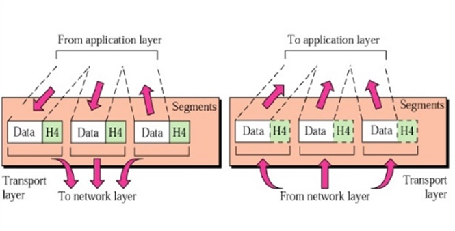

OSI: The 7 Layer Computer Architecture Model.
What is OSI Model?
The Open Systems Interconnection Model (OSI) is a framework used to describe the functions of a networking system.In 1983, the CCITT and ISO documents were merged to form The Basic Reference Model for Open Systems Interconnection, usually referred to as the Open Systems Interconnection Reference Model, OSI Reference Model, or simply OSI model. It was published in 1984 by both the ISO, as standard ISO 7498, and the renamed CCITT (now called the Telecommunications Standardization Sector of the International Telecommunication Union or ITU-T) as standard X.200.
Why OSI Model?
when two computer want to send data we can connect the computer using a lan cable and connectors to transfer data with the help of Network Interface Card.

But when two computer with different operating system want to send data, then how can they send data?? Here comes the Role of the OSI Model where the data processed over & different layer and then send over network to other devices.
OSI Model Layers
-
Application Layer:-
- As the name suggests application layer is a layer which works on the application but it does not includes computer applications like Chrome & Firefox, but contains Protocols which are needed to make this application works correctly in the network.
- Application layer work with the network applications which make use of the net like Chrome, Outlook,Skypee etc. The netwrok applications like chrome or firefox does not resides in the layer but usees its protocols like HTTPand HTTPs
- Bundle of protocols make the application layer.The data unit is called as Data or Message
Following are the activities done at application layer and which protocol they use for it.
- File Transfer uses the FTP protocol to transfer the files.
- Web Durfing used the HTTP/S protocol for web browsing.
- Emails are send using the SMTP protocols.
- Virtual Terminals used Telnet protocols.
Hence applications protocols are used by the applications to perform user activities.
-
Presentation Layer
- The main functioning of the presentation layer is to convert the data received from the application which is in the form of characters and number into the machine friendly language i.e Binary Code (01).
Eg. ASCII -----> EBCDIC (Convertion of ASCII code into EBCDIC). This is called as Data Translation.
- Then the converted data bits is then reduced which were representing the original data. This bit reduction process is called as Data Compression.
This causes the data to be transfered very quickly.It is useful in real time video and audio streaming.
- To maintain the integrity of the data, the data is encrypted at the sender side and then again it is decrypted at the receiver side using SSL Protocol and other available protocol.
- After all the processes are done it transfer the data to the Session Layer.
- The main functioning of the presentation layer is to convert the data received from the application which is in the form of characters and number into the machine friendly language i.e Binary Code (01).
-
Session Layer
- Session layer is responsil for setting and managing the connection in the computer network.The Data unit in session layer is calles a PDU(Protocol Data Unit).
- Following are the main functionality of the session layer.
- Authentication
- Authorization
Authentication is done to check whether the person who is going to access the web server is the owner of a given account in the web server.
Eg. Session layer forms a connection with the web server only when the user has logged in with correct username and password.
The main purpose of authentication is security. Without authentication, user's data stored on a server is unsafe on the grounds that everyone can get it from the server.
After authentication comes authorization which means after user sucessfully logged in on server has the access to do all the task present on the server.
Eg. When a user logs on to server authorization is carried on to check whether the user have the access the file present on the server or not.
-
Transport Layer
- Transport layer is the 4th layer of the OSI Model.
- The main role of the transport layer is to provide the communication services directly to the application processes running on different hosts.
- The data sent from the session layer is then divided into small packets called Segments, in which every segments is attached with a header which contains sending and receiver Ports.
- Following are the Functions involed in transport layer.
- Service point addressing
- Segmentation and Reassembly
In this function data can be transfered from not only from one computer to other computer but from one process to another process.
This is done semlessly because of the header added to the data segments which contains the sender or receiver Ports.
Here the data are converted into segments and each segment is assigned a unique value for its identification.
When the data is received at the receiver the transport layer then reassembles the segments according to the unique number assigned.
 -
Network Layer
- Network Layer is the 3rd layer of the OSI Model.
- It handles the service requests from the transport layer and further forwards the service request to the data link layer.
- The main role of the network layer is to move the packets from sending host to the receiving host.
- Addressing
- Routing
- Packeting
Following are the Functionality of network layer.
A network layer adds the source and destination address into the header of the Packet. It is used to identify the device on the internet.
It determines the best optimal path to send the data from source to destination.
The process of coverting the higher level data into packet.

-
Data-Link layer
- The data link layer is a 4th layer from the top and 2nd layer from the bottom.
-
Framing
The data received fron network layer is converted into frame in which a trailer is added to the frame.
The header which is added contains the hardware and source destination.
-
Physical Addressing
Physical addressing is generally sending the data to the desired address. The address here is generally MAC address.
-
Flow Control
It is the main functionality of the data link layer. It is the technique which is used to maintain the constant data rate on both the sides.
It also make sure that the sending speed of the sender does not exceeds the receiving speed of the reeiver.
-
Error Control
Error control is done by attaching a CRC before send the data to the physical layer.If any error occurs the receiver sends the acknowledgment for resending the corrupted frames.
-
Access Control
It determines which device has control over the link when two or more devices are connected at same communication channel.
Following are the main fuctionality of the Data-Link Layer.
-
Presentation Layer
- Presentation Layer is the 7th layer from the top and 1st layer from the bottom.
- It converts the bits data into signal an transmits over a deticated medium.
- Following are the functionality of presentation layers.
- Line Configuration
- Data Transmission
- Topology
It defines the way how two or more devices can be connected.
It defines the transmission mode whether it is simplex, Half-duplex or Full-duplex mode between the two devices on the network.
It defines how network devices are arranged.
Flow of data in OSI Model
Above diagram shows how the data sent and processed over the 7 layer from sender to receiver.